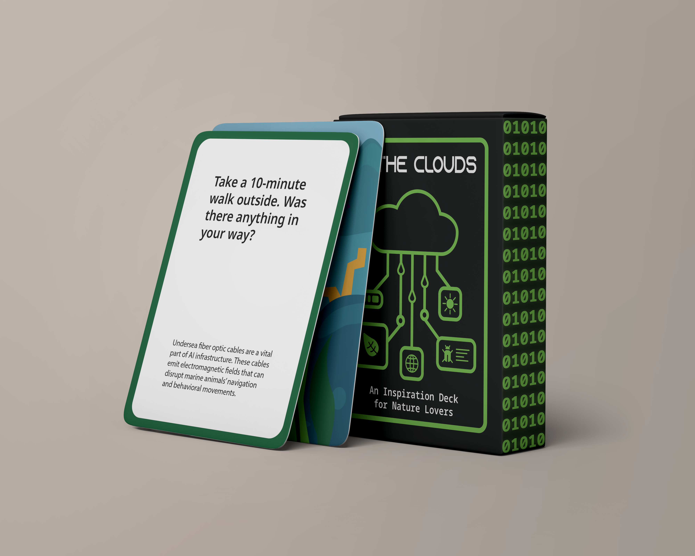
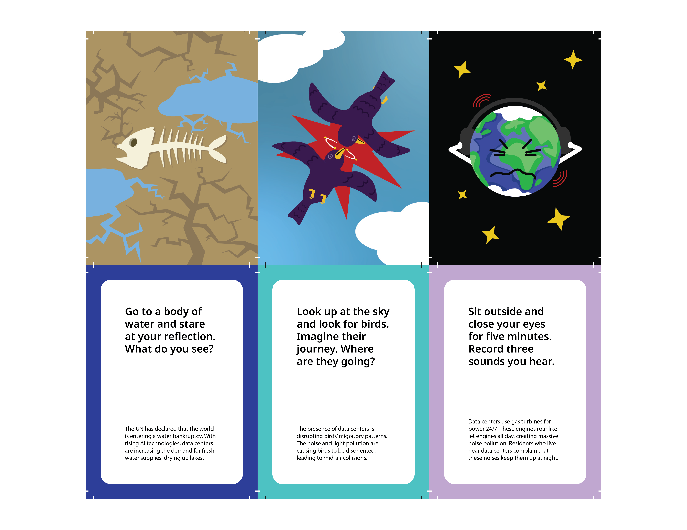
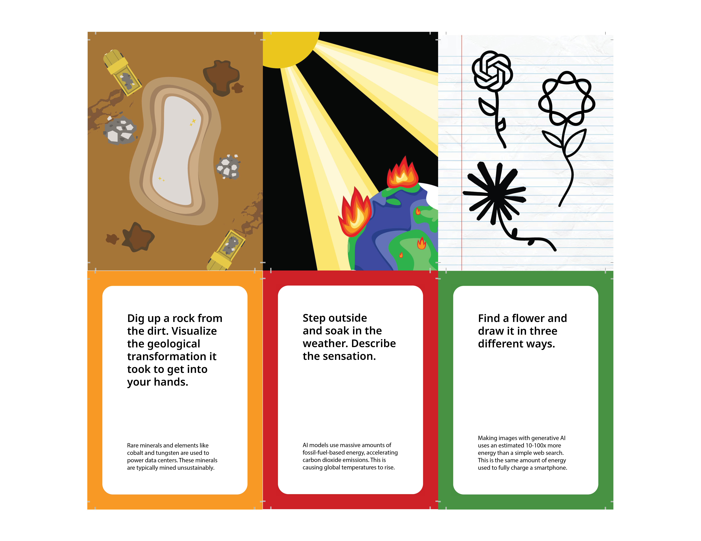
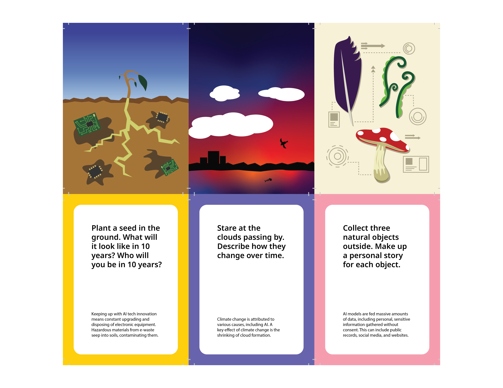
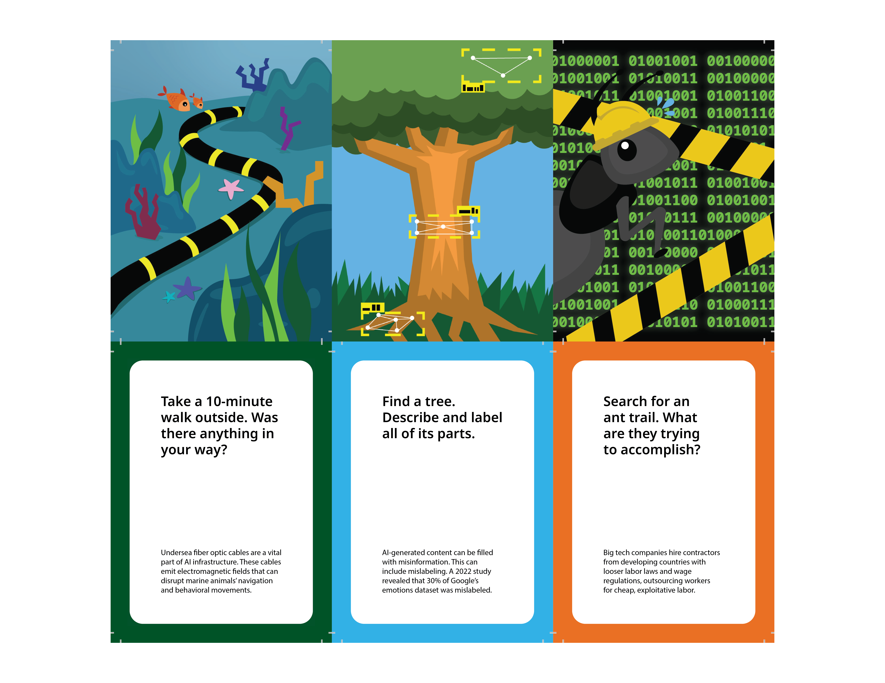
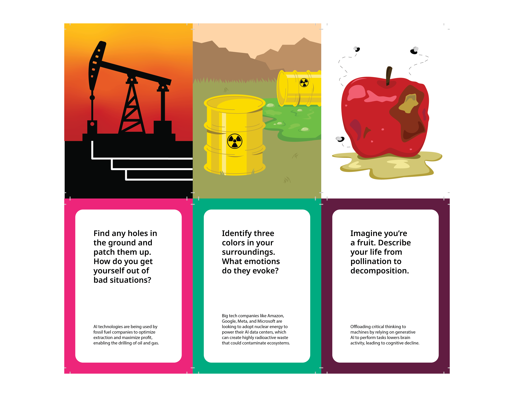
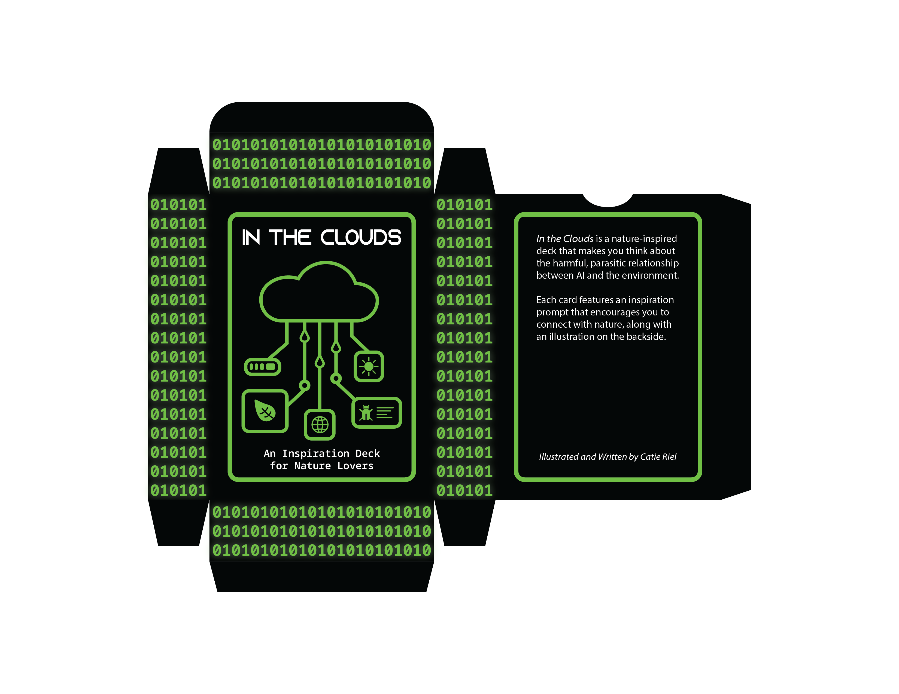

In the Clouds is a nature-themed inspiration card deck about AI and its effect on society. Each card displays a prompt on one side and a corresponding illustration on the other. The player is meant to pull out one card to use as guided inspiration. Alongside the prompts, each card contains brief information on how AI is harmful. The prompts and illustrations are all nature-related, as AI has a massive environmental impact. The cards explore topics such as environmental consequences, exploitative labor, and data usage. No AI was used in this project.
I wanted the box’s design to be simpler in comparison to the card deck. Unlike the cards, the box only uses 3 colors: black, green, and white. The box is meant to emulate the sterility and roboticness of technology, so that when the player opens the box, they’re surprised to see boldly designed and colorful cards.






